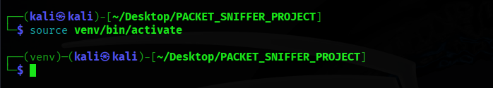
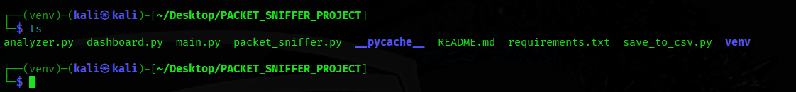
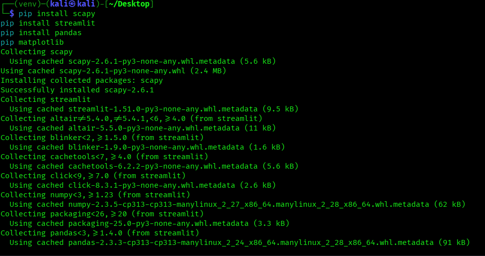

Live Packet Sniffing Tool
View on GitHubIntro
A packet sniffing tool is a software application used to capture and analyze data packets traveling across a network. It provides insights into network behavior by displaying key information such as source and destination IP addresses, protocols, timestamps, and packet sizes. These tools are essential for network administrators to troubleshoot issues, monitor performance, and optimize traffic flow. In cybersecurity, packet sniffers play a vital role in detecting suspicious or malicious activities, making them crucial for maintaining network security. Popular tools like Wireshark and tcpdump are widely used, but lightweight custom sniffers can also be built using languages like Python.
Step 1:
First, clone the project from GitHub.
Install all the required libraries listed in the requirements.txt file.
Step 2:
create the virtual environment:

Step 3:
Activate the Python virtual environment:
Step 4:
List out the files:
Step 5:
install the lib:
Step 6:
Run the main.py file:
sudo python main.py→ is used to run the file
Step 7:
The CSV file will be stored like this:
The CSV file is stored in your main folder
Step 8:
View the live data capture on your browser:
streamlit run dashboard.py→ command to see live data packet capturing
Step 9:
The actual output looks like this:
- Refresh the page to see new data packets.
- If any IP captures more than 1500 packets, it is marked as suspicious and displayed with a red border.